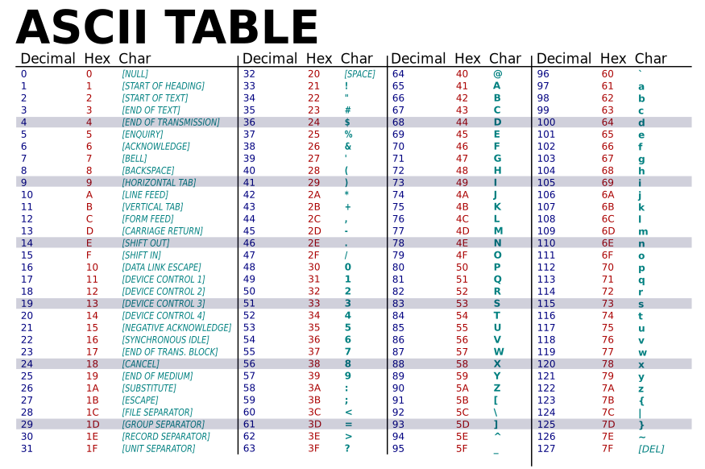
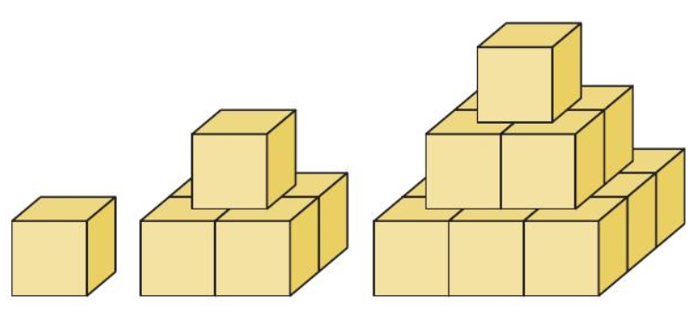

01 - Algorithmique
MxSTI 1.1
Dans chaque cas un booléen est renvoyé. Lequel ?
2 > 43 != 42 < 5 && 5 >= 32 < 5 || 4 < 0! (2 < 3 || 1 > 2)
MxSTI 1.2
Qu'affiche le programme suivant si on saisit Sacha à la ligne 7 ?
A toutes fins utiles

MxSTI 1.3
On exécute l’algorithme suivant en saisissant N = 2
VARIABLES :
N est un entier
U, V, W sont des réels
K est un entier
DEBUT :
Affecter 0 à K
Affecter 2 à U
Affecter 10 à V
Saisir N
Tant que K < N
Affecter K + 1 à K
Affecter U à W
Affecter (2 * U + V) / 3 à U
Affecter (W + 3 * V) / 4 à V
Fin tant que
Afficher U
Afficher V
FIN
Donner l’état des variables au cours de l’exécution de l’algorithme.
Traduire en C et vérifier les résultats trouvés.
Tu ne sais pas traduire le "tant que..." ?
MxSTI 1.4
On souhaite écrire une séquence d’instructions qui calcule :
Un élève propose le programme suivant, mais rien ne s’affiche dans la console.
#include <stdio.h>
int main() {
float p = 1;
int k = 0;
while (2 * k + 1 <= 51) {
p = p * 1 / (2 * k + 1);
}
printf("%f", p);
}
- Expliquer ce qu’il se passe et rectifier le programme.
- Proposer un autre programme qui effectue la même tâche avec une boucle bornée (boucle
for).
MxSTI 1.5
On cherche à déterminer les solutions strictement positives de l’équation :
Question 1
On note \(f\) la fonction définie sur l’intervalle \([0,+\infty[\) par :
pour tout \(x>0\), \(f(x)=e^x+e^{-x}-4x-2\)
Vérifier que pour tout \(x>0\),
En déduire
Question 2
On admet que le tableau de signe de \(f'\) est le suivant :
| \(x\) | \(0\) | \(ln(2+\sqrt{5})\) | \(+\infty\) | ||
|---|---|---|---|---|---|
| \(f’(x)\) | \(-\) | \(0\) | \(+\) |
Dresser le tableau de variations de la fonction \(f\) et démontrer que l’équation \(f(x)= 0\) admet une unique solution strictement positive \(\alpha\).
Question 3
On considère l’algorithme de dichotomie suivant :
VARIABLES :
a, b et m sont des nombres réels
INITIALISATION :
Affecter à a la valeur 2
Affecter à b la valeur 3
TRAITEMENT :
Tant que b - a > 0,1
Affecter à m la valeur (a + b) / 2
Si f(m) > 0 alors
Affecter à b la valeur de m
Sinon
Affecter à a la valeur de m
Fin Si
Fin Tant que
Afficher a et b
- Exécuter cet algorithme en notant dans un tableau, les valeurs de
a,b,b-aetm. - Que représentent les valeurs affichées par cet algorithme ?
- Ecrire en C une fonction qui met en œuvre l’algorithme précédent. Documenter cette fonction.
- Modifier cette fonction pour qu’elle renvoie une valeur de \(\alpha\) à \(10^{-3}\) près.
MxSTI 1.6
Avec des cubes identiques, on construit des pyramides comme indiqué ci-dessous :

-
Combien de cubes sont nécessaires pour construire une pyramide à 4 étages ? A 5 étages ?
-
Proposer une fonction « pyramide » en C qui permet, pour un entier N donné, de renvoyer le nombre de cubes nécessaires pour construire une pyramide à N étages.
-
Faire fonctionner le programme pour qu’il renvoie le nombre de cubes nécessaires pour construire une pyramide à 20 étages, puis 30 étages.
-
On dispose de 5 000 cubes. On voudrait savoir quel est le nombre maximal d’étages que l’on peut construire. Proposer un programme en C qui, pour un entier K donné, renvoie le nombre maximal d’étages que l’on peut construire avec K cubes, ainsi que le nombre de cubes non utilisés.
MxSTI 1.7
Un jeune développeur web demande votre aide pour améliorer son animation d’une célèbre voiture des années 90.
Il vous envoie le fichier suivant :
Il souhaiterait que le mouvement du faisceau ait l’air moins "molasson" et plus "amorti" quand il s’approche des extrémités.
-
Télécharger le fichier et étudier le programme et suivre l’évolution de la variable
step. Entre quelles valeurs et à quel pas évolue-t-elle ?La fonction
console.log()permet d’afficher le contenu d’une variable dans la console Javascript, elle-même accessible via les outils du développeur en appuyant sur F12 dans le navigateur.En Javascript, les variables ne sont pas typées et si elles sont introduites par le mot-clé
var, elles sont considérées comme globales… -
La variation de la vitesse attendue doit être la même dans les deux directions. Ajouter une variable
xdans la fonctiondelay. Trouver un calcul qui, en fonction de la valeur destep, donne àxune valeur croissante quelque soit la direction du faisceau. -
Dessiner sur papier une courbe d’évolution des valeurs renvoyées par
delayen fonction dexpour simuler l’amorti à l’approche des extrémités. -
A l’aide de GeoGebra, trouver une fonction permettant de coder tout ou partie la courbe dessinée à la question précédente.
-
Implémenter votre courbe d’évolution de la vitesse dans la fonction
delay.